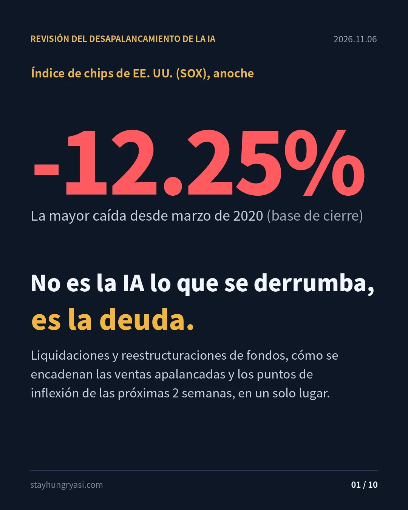
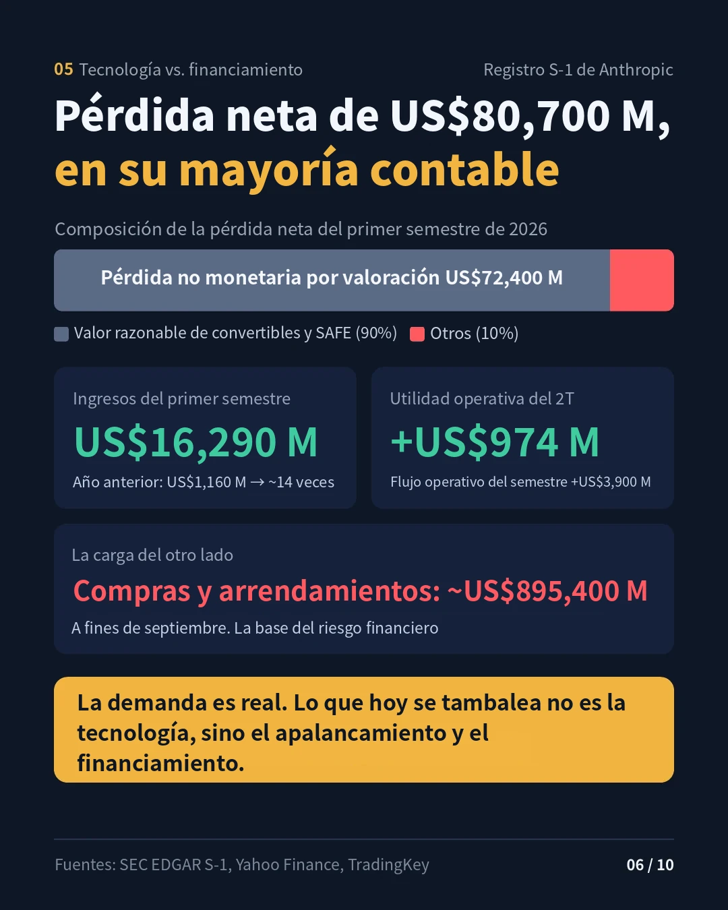
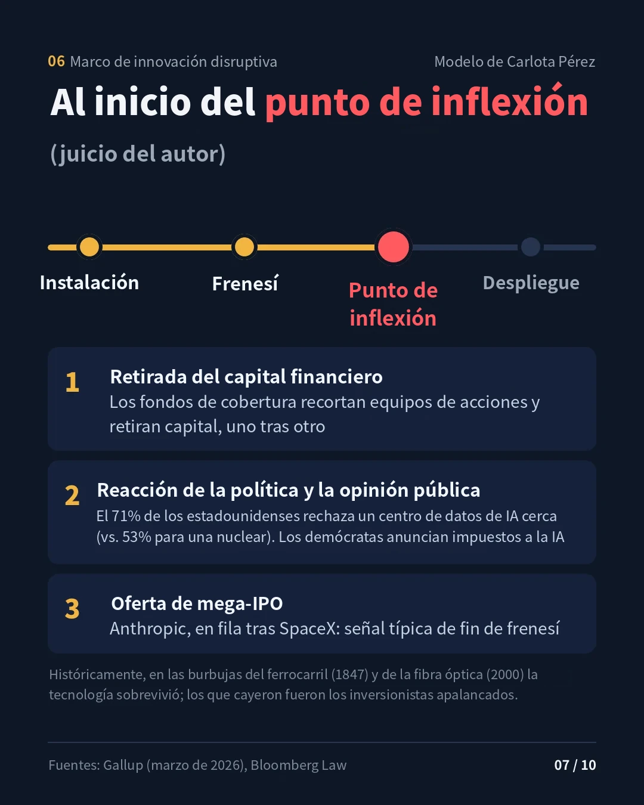
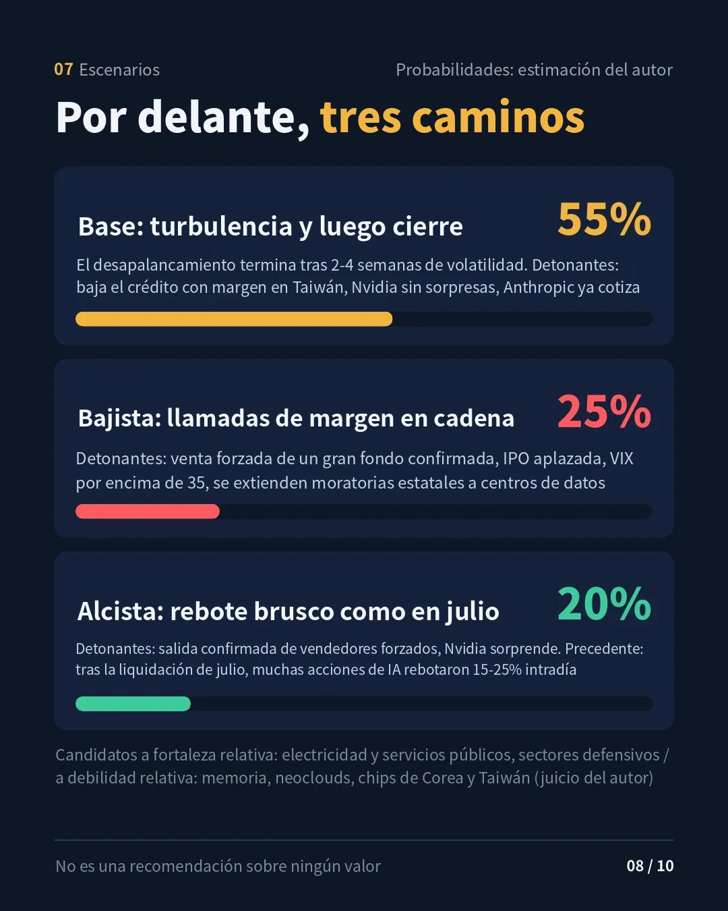
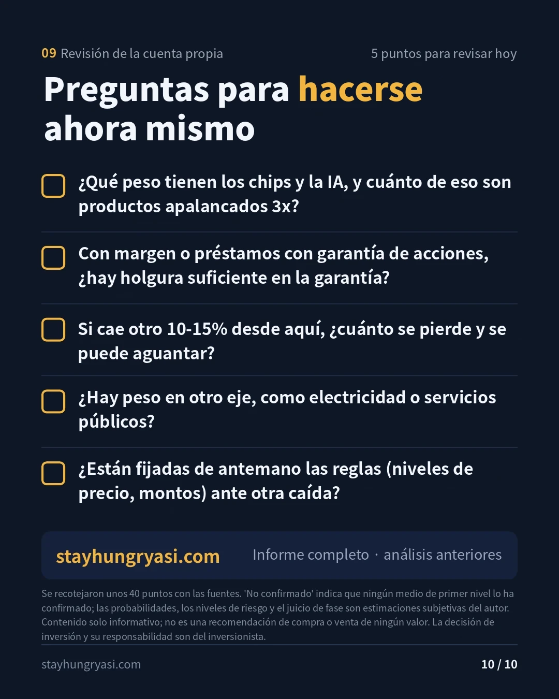

Datos al cierre de la sesión regular de EE. UU. del 5 de noviembre de 2026 · Elaborado el 6 de noviembre de 2026, 07:00 (hora de Corea) · stayhungryasi.com
Convenciones: las cifras son hechos según las fuentes enlazadas. 'Estimación' indica un juicio del autor y 'sin confirmar', un dato que no pudo verificarse en medios primarios. Tras el borrador se volvieron a contrastar unos 40 puntos con sus fuentes; las correcciones se reúnen en la última sección.
Aviso de conflicto de interés: esta investigación se elaboró con la IA de Anthropic (Claude), y en el texto aparecen el S-1 y el calendario de la IPO de Anthropic. No constituye una recomendación de inversión.
Lo esencial, resumido en 10 tarjetas. Haga clic en una imagen para ampliarla.
| Indicador | Cierre | Variación | Notas |
|---|---|---|---|
| S&P 500 | 7,353.73 | -4.36% | Peor jornada desde el choque arancelario del 'Día de la Liberación' de abril de 2025 |
| Nasdaq Compuesto | 24,315.00 | -5.52% | En zona de corrección, -11.9% desde su máximo. Algunos medios registran -5.2% |
| Dow | 51,523.06 | -3.44% | -1,833 puntos |
| Semiconductores de Filadelfia (SOX) | — | -12.25% | Mayor que el -10.3% del 5 jun.: la mayor caída desde marzo de 2020 (estimación, comparando cierres) |
| VIX | 28.18 | +69.66% | |
| Bono de EE. UU. a 10 años | 4.837% | -5.7pb | |
| WTI (contrato dic.) | 91.06 | +3.34% | |
| Bitcoin | 75,702 | -5.56% | Activo que cotiza 24 horas; dato al momento de la consulta |
| KOSPI (5 nov.) | 5,383.80 | -5.28% | Extranjeros vendieron en neto 3.3928 billones de wones; personas físicas compraron en neto 2.2722 billones de wones e institucionales, 845,700 millones de wones |
| TAIEX de Taiwán (5 nov.) | 41,574.72 | -3.20% | Mínimo desde el 31 jul. Extranjeros vendieron en neto NT$102,460 millones (la 10.ª mayor venta de la historia) |
El detonante fue la preocupación por la regulación y los impuestos a los centros de datos de IA tras la contundente victoria demócrata en las elecciones intermedias (según la prensa). Aun así, se considera que buena parte de la caída del día se explica más por los flujos que por los fundamentales, en particular por la liquidación mecánica de posiciones apalancadas (estimación). Los extranjeros vendieron en neto 7.952 billones de wones en la bolsa coreana durante las primeras 4 sesiones de noviembre, y el ritmo de venta diario promedio superó el doble del de octubre.
| Fondo (activos gestionados) | Evento | Fecha | Nivel de confirmación |
|---|---|---|---|
| Walleye Capital (US$17,000 millones) | Simplifica su negocio propio long-short de acciones, prescinde de buena parte de la dirección y de los equipos de inversión de esa área, devuelve parte del capital. Octubre: -5.9% (peor mes desde marzo de 2020) | 5 nov. | Confirmado por la prensa |
| Engineers Gate | Desmantela la mayor parte de su equipo de acciones 'Synthesis', que combinaba enfoques cuantitativos y fundamentales | 5 nov. | Confirmado por la prensa (Bloomberg) |
| Millennium (US$95,000 millones+) | Retira capital apalancado: más de US$1,000 millones de Troluce y US$500 millones de Axebrook | 3 nov. | Confirmado por la prensa (Bloomberg) |
| Rendimiento multiestrategia de octubre | Millennium -2.3%, Marshall Wace Eureka -5.4%, ExodusPoint -2.4%, North Rock -2.3% | Octubre | Citado por Bloomberg |
| Situational Awareness (unos US$10,000 millones desde julio) | El 5 nov. se difunden en X (Kalshi, entre otros) afirmaciones de 'quiebra'. En la llamada de margen de julio vendió todas sus acciones cotizadas, y Citadel adquirió cerca del 80% de ellas. Volvió a entrar mediante opciones desde septiembre | 5 nov. | Sin confirmar (redes sociales) |
| 5 ETF de Fidelity | Liquidación de los ETF Disruptive Finance, Disruptive Medicine, Disruptors, Metaverse y Real Estate. Última operación el 12 nov., liquidación hacia el 19 nov. | Anuncio 15 oct. | Comunicado de prensa |
| Préstamo para centro de datos | Un vendedor no identificado intenta vender un préstamo para centro de datos de US$500 millones | 5 nov. | Reporte único |
| Crédito minorista en Corea | Saldo de préstamos de margen: 28.6446 billones de wones (4 nov.). Unos 5.6 billones de wones menos que los 34.2887 billones de wones del 12 oct.; mínimo de 3 meses | ~4 nov. | Confirmado por la prensa |
| Restricción de rescates (gates) | No se encontraron casos nuevos en noviembre. Como referencia, en marzo de 2026 un fondo de crédito privado de Blue Owl impuso un gate por tiempo indefinido | — | — |
| Llamadas de margen de prime brokers en noviembre | Sin reportes oficiales. El reporte confirmado es la nota del FT de julio (Goldman y JPMorgan exigieron más garantías) | — | Sin confirmar |
Antes de la venta a Citadel, cerca de 2/3 de la cartera de Situational Awareness eran acciones cotizadas y el resto era principalmente una participación en Anthropic. Aunque el rumor fuera cierto, el volumen de ventas forzadas en el mercado sería limitado; el riesgo restante del fondo está más bien ligado al precio de la IPO de Anthropic (estimación).
| Vía | Fundamento | Nivel de riesgo (estimación) |
|---|---|---|
| Prime brokers | Cerca del 16% de los préstamos prime de Goldman estaba ligado directamente a acciones de memoria para IA (al 30 de junio). Apalancamiento bruto de los hedge funds: cerca del 310% | Alto |
| Concentración | Los hedge funds revirtieron en 5 sesiones todas sus compras netas de IA desde 2025. La caída de -4.2% de la canasta de acciones favoritas de los hedge funds de Goldman el 22 oct. fue la peor desde 2011 (fuente secundaria). Goldman estimó que el desmontaje está más cerca de su inicio que de su final | Alto |
| ETF apalancados | SOXL recibió en octubre una entrada récord de US$7,000 millones. Cada jornada bajista genera, por estructura, ventas de rebalanceo al cierre | Muy alto |
| Crédito bancario | Los bancos chocan con sus límites internos y trasladan a terceros el riesgo de los préstamos para centros de datos (FT, mayo). Intento de venta de un préstamo para centro de datos el 5 nov. | Medio |
| Corea | El crédito con margen bajó, pero el saldo de préstamo de valores subió 6.5% en 3 semanas (3,277.87 millones de acciones). Depósitos de inversionistas: 89.2273 billones de wones | Medio |
| Taiwán | Aunque el índice cayó, el saldo de préstamos de margen no bajó mucho. Margen para más ventas forzadas | Alto |
Cálculo del rebalanceo de los ETF apalancados (estimación). Un ETF con multiplicador L debe ajustar su exposición en L×(L-1)×r de sus activos netos cuando el índice subyacente se mueve r. Para un ETF largo 3x es 6×|r|; para un ETF inverso 3x, 12×|r|. Con el -12.25% del SOX, un ETF largo 3x debe vender cerca del 73.5% de sus activos netos, y un ETF inverso 3x debe ampliar su posición corta en cerca del 147% de sus activos netos. Es decir, los ETF apalancados largos y cortos vendieron al mismo tiempo al cierre. Cabe señalar que desde 2021 el índice subyacente de SOXL y SOXS es el ICE Semiconductor Index y no el SOX, por lo que este cálculo es una aproximación.
En Corea, dos rondas de ventas forzadas de garantías, en julio y octubre, ya depuraron buena parte del apalancamiento minorista. En Taiwán el saldo de crédito ha bajado menos, por lo que a corto plazo se considera que el riesgo de liquidación forzada es mayor del lado taiwanés (estimación).
Fase de Pérez: del final del frenesí a la entrada del punto de inflexión (estimación).
Separar el riesgo tecnológico del riesgo financiero
| Categoría | Fundamento | Juicio (estimación) |
|---|---|---|
| Tecnología y demanda | S-1 de Anthropic: ingresos del 1S 2026 de US$16,290 millones (mismo periodo del año anterior: US$1,160 millones), utilidad operativa del 2T de US$974 millones, flujo de caja operativo del 1S de +US$3,900 millones. De la pérdida neta de US$80,700 millones, US$72,400 millones corresponden a cambios en el valor razonable de bonos convertibles y SAFE (sin efecto en caja) | La demanda es real |
| Finanzas y financiamiento | Apalancamiento de los fondos, concentración en prime brokers, límites bancarios a los préstamos para centros de datos, compromisos de compra y arrendamiento de Anthropic por cerca de US$895,400 millones al 30 sep., presión de la oferta de la IPO | El principal riesgo actual |
Comparación con casos históricos (con base en conocimiento histórico general)
| Caso | Similitudes | Diferencias |
|---|---|---|
| Ferrocarriles 1847 | El capital especulativo tendió primero la infraestructura, y los requerimientos de pago adicional sobre acciones parcialmente pagadas funcionaron, en la práctica, como llamadas de margen | La IA actual ya genera grandes ingresos y utilidad operativa |
| Fibra óptica 2000 | Inversión en capital financiada con deuda, temor a la sobreconstrucción | El flujo de caja propio de los hiperescaladores es sólido |
| ARK 2021 | Salida de dinero de productos temáticos (similar a la liquidación de los ETF 'Disruptive' de Fidelity) | Entonces no había apalancamiento de fondos; ahora se superponen el apalancamiento de los fondos y los ETF 3x |
| Escenario | Probabilidad | Detonantes | Candidatos a fortaleza / debilidad relativa |
|---|---|---|---|
| Base: el desapalancamiento termina tras 2–4 semanas de volatilidad | 55% | Baja el saldo de crédito con margen en Taiwán, resultados de Nvidia sin sorpresas, salida a bolsa de Anthropic concluida | Fortaleza: electricidad y servicios públicos, estrategias de volatilidad / Debilidad: neoclouds |
| Bajista: llamadas de margen en cadena | 25% | Venta forzada de un gran fondo confirmada, IPO aplazada, VIX de 35 o más, se extienden las moratorias estatales a centros de datos | Fortaleza: bonos del Tesoro y oro / Debilidad: memoria, Corea y Taiwán |
| Alcista: rebote brusco como en julio | 20% | Salida confirmada de los vendedores forzados, sorpresa en los resultados de Nvidia | Fortaleza: equipos para semiconductores y memoria |
Como referencia, durante la liquidación de Situational Awareness en julio, muchas acciones de IA que se desplomaron justo después de la noticia rebotaron 15–25% intradía. En octubre se mantuvieron firmes sectores defensivos como energía y finanzas, y servicios públicos y salud, y el negocio de volatilidad de Walleye tuvo en octubre el mejor mes de su historia. No es una recomendación de compra o venta de ningún valor en particular.
| Fecha (EE. UU.) | Evento |
|---|---|
| 10 nov. (mar.) | Primera fecha posible para el inicio del roadshow de Anthropic (15 días después del S-1 público) |
| 12 nov. (jue.) | Último día de negociación de los 5 ETF de Fidelity |
| 13 nov. (vie.) | Primera fecha posible para que Anthropic fije el precio de su IPO (considerando el feriado de la SEC del 11 nov.) |
| 14 nov. (sáb.) | Vence el plazo de los 13F del 3T. Al caer en fin de semana, las normas permiten presentarlos hasta el siguiente día hábil (16 nov.). Primeros reportes que reflejarán la venta de SA a Citadel |
| 16 nov. (lun.) | Primera fecha posible para la salida a bolsa de Anthropic. Según la prensa, el objetivo es la semana del 16 nov. |
| 17 nov. (mar.) | Resultados del 3T (FY27) de Nvidia, tras el cierre en EE. UU. / conferencia a las 7 a. m. hora de Corea del 18 nov. (mié.) |
| 19 nov. (jue.) | Fecha prevista de liquidación de los ETF de Fidelity |
| Antes del 26 nov. (jue.) | Objetivo de salida a bolsa de Anthropic (antes de Acción de Gracias); la alternativa es fin de año |
| 8–9 dic. | FOMC (según varias fuentes secundarias) |
Anthropic presentó el 2 de noviembre una enmienda al S-1 con los resultados del 3T, pero al 5 de noviembre aún no hay una enmienda con el rango de precio de la oferta. Según la prensa, las expectativas de valuación de los inversionistas bajaron de cerca de US$2 billones a US$1.5–1.6 billones.
Estas son las correcciones respecto al borrador. Quedan sin confirmar dos puntos: el rumor de quiebra de Situational Awareness y nuevas llamadas de margen de prime brokers en noviembre.
| Punto | Borrador | Corrección |
|---|---|---|
| Fecha de resultados de Nvidia | 18 nov. (según sitios de estimaciones) | 17 nov. (mar.), anuncio oficial de la empresa (28 oct.) |
| Cifras de Anthropic | Pérdida neta y utilidad operativa 'se contradicen' | No se contradicen. La mayor parte de la pérdida neta son cambios en el valor razonable sin efecto en caja |
| Engineers Gate | Reporte único | Confirmado con un artículo firmado de Bloomberg |
| Venta de SA | Todas las acciones cotizadas a Citadel | Vendió todo; Citadel adquirió cerca del 80% |
| ETF apalancados | Cerca del 72% con base en el SOX | El índice subyacente es el ICE Semiconductor Index; aproximación de cerca del 73.5% |
| Gallup 71% | Citado de una página secundaria | Sustituido por la encuesta original de Gallup (marzo de 2026) |
| Goldman 16% | Redactado en presente | Indicado expresamente como cifra al 30 de junio |
Dónde podría fallar este análisis. ① Se supuso que el impacto de SA se limita a opciones y participaciones privadas, pero si existen préstamos no divulgados o estructuras con participaciones privadas como garantía, el efecto podría ser mayor. ② La utilidad operativa de Anthropic es la cifra de un solo trimestre y, dado el peso de los compromisos de US$895,400 millones, su continuidad aún no está comprobada. ③ Se interpretó la postura federal como un 'ajuste de ritmo', pero si se extienden las moratorias estatales a centros de datos, sube la probabilidad del escenario bajista.
stayhungryasi.com · Investigación con fines informativos; no constituye una recomendación de inversión. Las decisiones de inversión y su responsabilidad corresponden al propio inversionista.